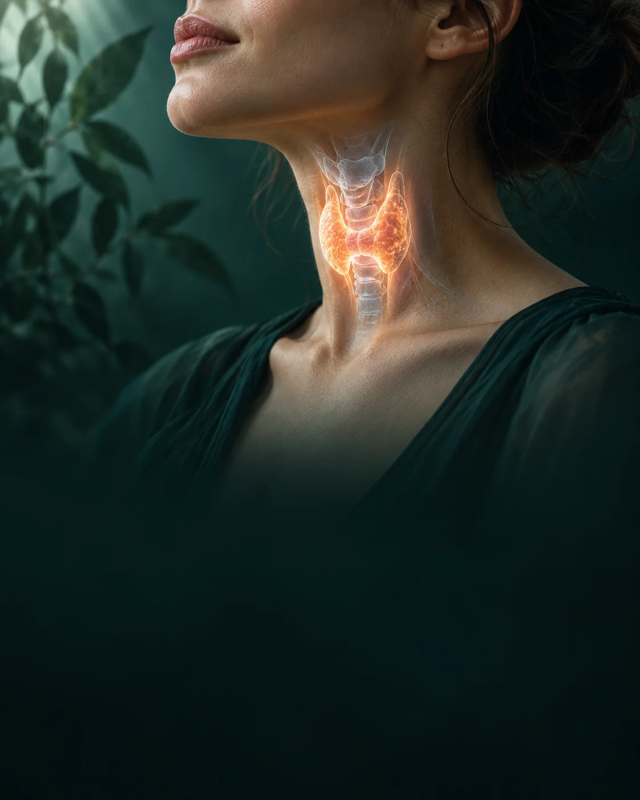

Онлайн-консультация
Консультация эндокринолога онлайн
Разберём ваши анализы, симптомы и образ жизни. Составим понятный план дальнейших шагов без поездки в клинику.
Когда стоит обратиться
Решим вопросы, связанные с гормональным здоровьем
Заболевания щитовидной железы
Гипотиреоз, гипертиреоз, узлы и аутоиммунные процессы.
Нарушения веса и обмена веществ
Изменения веса и возможные нарушения обмена веществ.
Диабет и предиабет
Показатели сахара, наблюдение и вопросы лечения.
Гормональные нарушения
Вопросы цикла, СПКЯ и самочувствия.
Планирование беременности
Подготовка и наблюдение эндокринного здоровья.
Разбор анализов и назначений
Вторая консультация, объяснение результатов и плана обследования.

Комплексный подход
Смотрим на ситуацию в целом
Обсудим жалобы, имеющиеся обследования и образ жизни, чтобы определить обоснованные дальнейшие шаги.
Просто и удобно
Как проходит онлайн-консультация
Вы выбираете время
Отмечаете удобный интервал на странице записи.
Готовите материалы
Если анализы уже есть, держите их под рукой во время встречи.
Онлайн-встреча
Обсуждаем вашу ситуацию по видеосвязи в согласованное время.
Получаете план
По итогам консультации получите краткое резюме и дальнейшие шаги.
Первичная консультация
Стоимость и формат
по видеосвязи
- Разбор жалоб, истории и результатов обследований
- Объяснение показателей простым языком
- План дальнейшей диагностики и наблюдения
- Краткое резюме по итогам консультации
Оплата после подтверждения времени. Ссылка на оплату и правила переноса отправляются вместе с подтверждением записи.
Результат консультации
Что вы получите
Понятное объяснение результатов, ответы на вопросы и последовательный план дальнейших действий.
- Понимание того, что могут означать ваши показатели
- Список анализов и исследований, которые действительно нужны
- Понятный план дальнейших шагов без лишних назначений
- Ответы на вопросы и краткое резюме консультации
Важно
Конфиденциально и удобно
- Данные демонстрационной заявки остаются в текущей вкладке.
- Встреча проходит онлайн в согласованном формате.
- Медицинские документы не загружаются через форму сайта.
- Если нужен очный осмотр, врач сообщит об этом.
Есть вопросы?
Не уверены, подходит ли вам онлайн-консультация?
Посмотрите способы связи на странице контактов и задайте организационный вопрос до записи.
Частые вопросы
Можно ли получить консультацию, если я не сдавал анализы?
Да. На консультации можно обсудить жалобы и определить, какие обследования действительно нужны. Дополнительные анализы назначаются только при необходимости.
Вы назначаете лечение онлайн?
В рамках консультации обсуждаются принципы лечения и наблюдения. Решение о назначении конкретных препаратов принимается с учётом вашего состояния, противопоказаний и очного осмотра, если он необходим.
Что делать, если во время консультации потребуется осмотр?
Я объясню, какие вопросы нельзя решить дистанционно, и подскажу, к какому специалисту и как быстро обратиться очно.
Сколько действует рекомендация сдать анализы?
План обследования актуален до изменения состояния или появления новых результатов. Если ситуация меняется, план стоит пересмотреть.